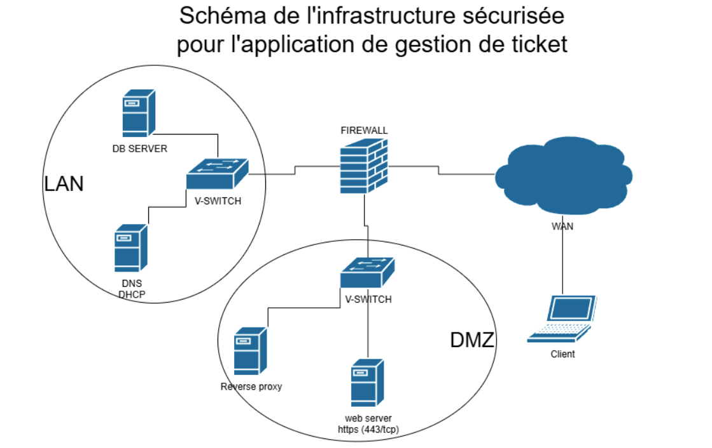

Mon Parcours
Elsa Ayache
Formation en administration systèmes & réseaux, sécurité des SI, services réseau. Deux stages chez Collins Aerospace.
Fondamentaux en algorithmique, développement et systèmes d'information.
Poursuite en administration avancée des systèmes, réseaux et bases de données SQL.
Bachelor Admin. Systèmes, Réseaux & BDD
À la rentrée 2026, je rejoindrai l'EPSI Balma pour préparer un Bachelor Administrateur Systèmes, Réseaux et Bases de Données. Cette formation en alternance me permettra d'approfondir mes compétences techniques dans un contexte professionnel concret.
Gestion avancée d'environnements Windows Server et Linux, virtualisation, haute disponibilité.
Routage, switching, VPN, sécurité périmétrique et supervision d'infrastructure.
Conception, administration et optimisation de bases de données relationnelles.
Expériences & Stages

Collins Aerospace
Support technique et gestion de parc — Blagnac & Colomiers.
Infrastructure & Sécurité

Cluster Proxmox HA
Modernisation et sécurisation du SI d'EcoSolar Solutions.

Interconnexion Multi-site
Planification d'un réseau étendu sécurisé.

Services d'Infrastructure
Mise en œuvre et sécurisation de services réseaux.
Développement & Sécurité Appliquée

Déploiement d'une application de ticketing
Collaboration SLAM et SISR pour créer une infrastructure complète.

Challenges CTF
Entraînement pratique sur les vulnérabilités Linux.

SecNumAcadémie
Validation des bonnes pratiques de sécurité numérique de l'ANSSI et de la CNIL.